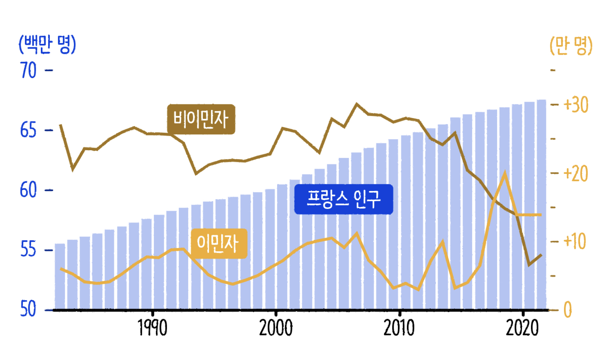
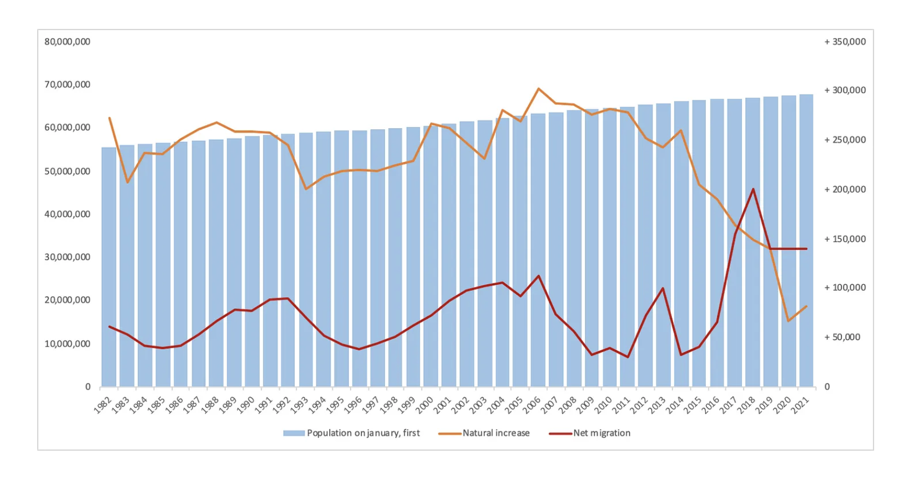
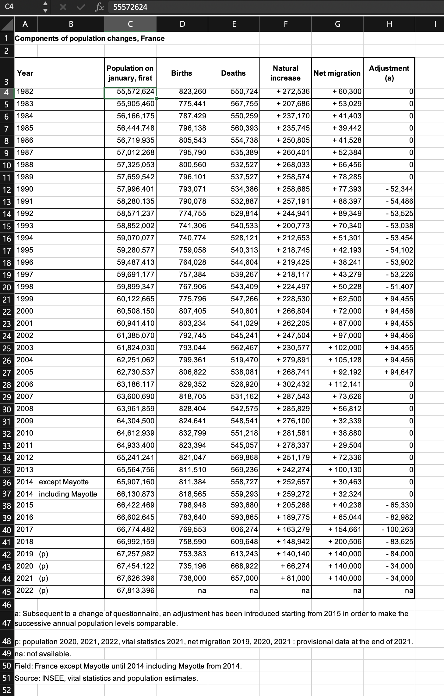

23-0729 2차오프라인
언론기사 그래프 따라그리기
디자인 작업

그래프 원본

데이터소스
Running Code
1. 파일 불러오기
1-1. 라이브러리 로드
엑셀파일 불러오기
read_excel("./2st/fe_dod_compo_crois_va.xlsx")New names:
• `` -> `...2`
• `` -> `...3`
• `` -> `...4`
• `` -> `...5`
• `` -> `...6`
• `` -> `...7`
• `` -> `...8`# A tibble: 50 × 8
Components of population changes,…¹ ...2 ...3 ...4 ...5 ...6 ...7 ...8
<chr> <chr> <chr> <chr> <chr> <chr> <chr> <chr>
1 <NA> <NA> <NA> <NA> <NA> <NA> <NA> <NA>
2 Year <NA> Popu… Birt… Deat… Natu… Net … Adju…
3 1982 <NA> 5557… 8232… 5507… 2725… 60300 0
4 1983 <NA> 5590… 7754… 5677… 2076… 53029 0
5 1984 <NA> 5616… 7874… 5502… 2371… 41403 0
6 1985 <NA> 5644… 7961… 5603… 2357… 39442 0
7 1986 <NA> 5671… 8055… 5547… 2508… 41528 0
8 1987 <NA> 5701… 7957… 5353… 2604… 52384 0
9 1988 <NA> 5732… 8005… 5325… 2680… 66456 0
10 1989 <NA> 5765… 7961… 5375… 2585… 78285 0
# ℹ 40 more rows
# ℹ abbreviated name: ¹`Components of population changes, France`스크린샷

데이터 저장하기
read_excel("./2st/fe_dod_compo_crois_va.xlsx") -> france1_excelNew names:
• `` -> `...2`
• `` -> `...3`
• `` -> `...4`
• `` -> `...5`
• `` -> `...6`
• `` -> `...7`
• `` -> `...8`- 파일의 내용을 열어보는 것
- 파일의 내용을 열어서 변수에 담는 것
- 변수에 담은 파일의 내용을 불러오는 것
불러오기 vs 저장하기 vs 호출하기
#불러오기
read_excel("./2st/fe_dod_compo_crois_va.xlsx")New names:
• `` -> `...2`
• `` -> `...3`
• `` -> `...4`
• `` -> `...5`
• `` -> `...6`
• `` -> `...7`
• `` -> `...8`# A tibble: 50 × 8
Components of population changes,…¹ ...2 ...3 ...4 ...5 ...6 ...7 ...8
<chr> <chr> <chr> <chr> <chr> <chr> <chr> <chr>
1 <NA> <NA> <NA> <NA> <NA> <NA> <NA> <NA>
2 Year <NA> Popu… Birt… Deat… Natu… Net … Adju…
3 1982 <NA> 5557… 8232… 5507… 2725… 60300 0
4 1983 <NA> 5590… 7754… 5677… 2076… 53029 0
5 1984 <NA> 5616… 7874… 5502… 2371… 41403 0
6 1985 <NA> 5644… 7961… 5603… 2357… 39442 0
7 1986 <NA> 5671… 8055… 5547… 2508… 41528 0
8 1987 <NA> 5701… 7957… 5353… 2604… 52384 0
9 1988 <NA> 5732… 8005… 5325… 2680… 66456 0
10 1989 <NA> 5765… 7961… 5375… 2585… 78285 0
# ℹ 40 more rows
# ℹ abbreviated name: ¹`Components of population changes, France`#저장하기 (내용은 같음)
read_excel("./2st/fe_dod_compo_crois_va.xlsx") -> france1_excelNew names:
• `` -> `...2`
• `` -> `...3`
• `` -> `...4`
• `` -> `...5`
• `` -> `...6`
• `` -> `...7`
• `` -> `...8`#저장된 이름으로 호출하기
france1_excel# A tibble: 50 × 8
Components of population changes,…¹ ...2 ...3 ...4 ...5 ...6 ...7 ...8
<chr> <chr> <chr> <chr> <chr> <chr> <chr> <chr>
1 <NA> <NA> <NA> <NA> <NA> <NA> <NA> <NA>
2 Year <NA> Popu… Birt… Deat… Natu… Net … Adju…
3 1982 <NA> 5557… 8232… 5507… 2725… 60300 0
4 1983 <NA> 5590… 7754… 5677… 2076… 53029 0
5 1984 <NA> 5616… 7874… 5502… 2371… 41403 0
6 1985 <NA> 5644… 7961… 5603… 2357… 39442 0
7 1986 <NA> 5671… 8055… 5547… 2508… 41528 0
8 1987 <NA> 5701… 7957… 5353… 2604… 52384 0
9 1988 <NA> 5732… 8005… 5325… 2680… 66456 0
10 1989 <NA> 5765… 7961… 5375… 2585… 78285 0
# ℹ 40 more rows
# ℹ abbreviated name: ¹`Components of population changes, France`1-2 데이터 훑어보기
데이터 사이즈
france1_excel |> dim() # 데이터 사이즈 (가로 몇 행, 세로 몇 열)[1] 50 8데이터 구조
france1_excel |> str() # 구조tibble [50 × 8] (S3: tbl_df/tbl/data.frame)
$ Components of population changes, France: chr [1:50] NA "Year" "1982" "1983" ...
$ ...2 : chr [1:50] NA NA NA NA ...
$ ...3 : chr [1:50] NA "Population on january, first" "55572624" "55905460" ...
$ ...4 : chr [1:50] NA "Births" "823260" "775441" ...
$ ...5 : chr [1:50] NA "Deaths" "550724" "567755" ...
$ ...6 : chr [1:50] NA "Natural increase" "272536" "207686" ...
$ ...7 : chr [1:50] NA "Net migration" "60300" "53029" ...
$ ...8 : chr [1:50] NA "Adjustment (a)" "0" "0" ...컬럼 이름
france1_excel |> colnames() # 컬럼 이름[1] "Components of population changes, France"
[2] "...2"
[3] "...3"
[4] "...4"
[5] "...5"
[6] "...6"
[7] "...7"
[8] "...8" 첫 6줄
- 2번째 행에 NA 제거 필요
france1_excel |> head() # 첫 6줄# A tibble: 6 × 8
Components of population changes, …¹ ...2 ...3 ...4 ...5 ...6 ...7 ...8
<chr> <chr> <chr> <chr> <chr> <chr> <chr> <chr>
1 <NA> <NA> <NA> <NA> <NA> <NA> <NA> <NA>
2 Year <NA> Popu… Birt… Deat… Natu… Net … Adju…
3 1982 <NA> 5557… 8232… 5507… 2725… 60300 0
4 1983 <NA> 5590… 7754… 5677… 2076… 53029 0
5 1984 <NA> 5616… 7874… 5502… 2371… 41403 0
6 1985 <NA> 5644… 7961… 5603… 2357… 39442 0
# ℹ abbreviated name: ¹`Components of population changes, France`마지막 6줄
- NA, a, p, na, Field, Source 등 확인 필요
france1_excel |> tail() # 마지막 6줄# A tibble: 6 × 8
Components of population changes, …¹ ...2 ...3 ...4 ...5 ...6 ...7 ...8
<chr> <chr> <chr> <chr> <chr> <chr> <chr> <chr>
1 <NA> <NA> <NA> <NA> <NA> <NA> <NA> <NA>
2 a: Subsequent to a change of questi… <NA> <NA> <NA> <NA> <NA> <NA> <NA>
3 p: population 2020, 2021, 2022, vit… <NA> <NA> <NA> <NA> <NA> <NA> <NA>
4 na: not available. <NA> <NA> <NA> <NA> <NA> <NA> <NA>
5 Field: France except Mayotte until … <NA> <NA> <NA> <NA> <NA> <NA> <NA>
6 Source: INSEE, vital statistics and… <NA> <NA> <NA> <NA> <NA> <NA> <NA>
# ℹ abbreviated name: ¹`Components of population changes, France`데이터 보기
| Components of population changes, France | ...2 | ...3 | ...4 | ...5 | ...6 | ...7 | ...8 |
|---|---|---|---|---|---|---|---|
| NA | NA | NA | NA | NA | NA | NA | NA |
| Year | NA | Population on january, first | Births | Deaths | Natural increase | Net migration | Adjustment (a) |
| 1982 | NA | 55572624 | 823260 | 550724 | 272536 | 60300 | 0 |
| 1983 | NA | 55905460 | 775441 | 567755 | 207686 | 53029 | 0 |
| 1984 | NA | 56166175 | 787429 | 550259 | 237170 | 41403 | 0 |
| 1985 | NA | 56444748 | 796138 | 560393 | 235745 | 39442 | 0 |
2 전처리
라이브러리
── Attaching core tidyverse packages ──────────────────────── tidyverse 2.0.0 ──
✔ dplyr 1.1.2 ✔ readr 2.1.4
✔ forcats 1.0.0 ✔ stringr 1.5.0
✔ ggplot2 3.4.2 ✔ tibble 3.2.1
✔ lubridate 1.9.2 ✔ tidyr 1.3.0
✔ purrr 1.0.1
── Conflicts ────────────────────────────────────────── tidyverse_conflicts() ──
✖ dplyr::filter() masks stats::filter()
✖ dplyr::lag() masks stats::lag()
ℹ Use the conflicted package (<http://conflicted.r-lib.org/>) to force all conflicts to become errorshead()에서 확인한 NA 제거
france1_excel# A tibble: 50 × 8
Components of population changes,…¹ ...2 ...3 ...4 ...5 ...6 ...7 ...8
<chr> <chr> <chr> <chr> <chr> <chr> <chr> <chr>
1 <NA> <NA> <NA> <NA> <NA> <NA> <NA> <NA>
2 Year <NA> Popu… Birt… Deat… Natu… Net … Adju…
3 1982 <NA> 5557… 8232… 5507… 2725… 60300 0
4 1983 <NA> 5590… 7754… 5677… 2076… 53029 0
5 1984 <NA> 5616… 7874… 5502… 2371… 41403 0
6 1985 <NA> 5644… 7961… 5603… 2357… 39442 0
7 1986 <NA> 5671… 8055… 5547… 2508… 41528 0
8 1987 <NA> 5701… 7957… 5353… 2604… 52384 0
9 1988 <NA> 5732… 8005… 5325… 2680… 66456 0
10 1989 <NA> 5765… 7961… 5375… 2585… 78285 0
# ℹ 40 more rows
# ℹ abbreviated name: ¹`Components of population changes, France`# A tibble: 48 × 8
Components of population changes,…¹ ...2 ...3 ...4 ...5 ...6 ...7 ...8
<chr> <chr> <chr> <chr> <chr> <chr> <chr> <chr>
1 1982 <NA> 5557… 8232… 5507… 2725… 60300 0
2 1983 <NA> 5590… 7754… 5677… 2076… 53029 0
3 1984 <NA> 5616… 7874… 5502… 2371… 41403 0
4 1985 <NA> 5644… 7961… 5603… 2357… 39442 0
5 1986 <NA> 5671… 8055… 5547… 2508… 41528 0
6 1987 <NA> 5701… 7957… 5353… 2604… 52384 0
7 1988 <NA> 5732… 8005… 5325… 2680… 66456 0
8 1989 <NA> 5765… 7961… 5375… 2585… 78285 0
9 1990 <NA> 5799… 7930… 5343… 2586… 77393 -523…
10 1991 <NA> 5828… 7900… 5328… 2571… 88397 -544…
# ℹ 38 more rows
# ℹ abbreviated name: ¹`Components of population changes, France`read_excel("./2st/fe_dod_compo_crois_va.xlsx",skip = 1)New names:
• `` -> `...2`# A tibble: 48 × 8
Year ...2 `Population on january, first` Births Deaths `Natural increase`
<chr> <chr> <dbl> <chr> <chr> <chr>
1 1982 <NA> 55572624 823260 550724 272536
2 1983 <NA> 55905460 775441 567755 207686
3 1984 <NA> 56166175 787429 550259 237170
4 1985 <NA> 56444748 796138 560393 235745
5 1986 <NA> 56719935 805543 554738 250805
6 1987 <NA> 57012268 795790 535389 260401
7 1988 <NA> 57325053 800560 532527 268033
8 1989 <NA> 57659542 796101 537527 258574
9 1990 <NA> 57996401 793071 534386 258685
10 1991 <NA> 58280135 790078 532887 257191
# ℹ 38 more rows
# ℹ 2 more variables: `Net migration` <chr>, `Adjustment (a)` <chr>2열 제거
france1_excel |> select(-"...2") #병합된 2열 제거# A tibble: 50 × 7
Components of population changes, Franc…¹ ...3 ...4 ...5 ...6 ...7 ...8
<chr> <chr> <chr> <chr> <chr> <chr> <chr>
1 <NA> <NA> <NA> <NA> <NA> <NA> <NA>
2 Year Popu… Birt… Deat… Natu… Net … Adju…
3 1982 5557… 8232… 5507… 2725… 60300 0
4 1983 5590… 7754… 5677… 2076… 53029 0
5 1984 5616… 7874… 5502… 2371… 41403 0
6 1985 5644… 7961… 5603… 2357… 39442 0
7 1986 5671… 8055… 5547… 2508… 41528 0
8 1987 5701… 7957… 5353… 2604… 52384 0
9 1988 5732… 8005… 5325… 2680… 66456 0
10 1989 5765… 7961… 5375… 2585… 78285 0
# ℹ 40 more rows
# ℹ abbreviated name: ¹`Components of population changes, France`france1_excel |> select(-"...2") -> france2_select